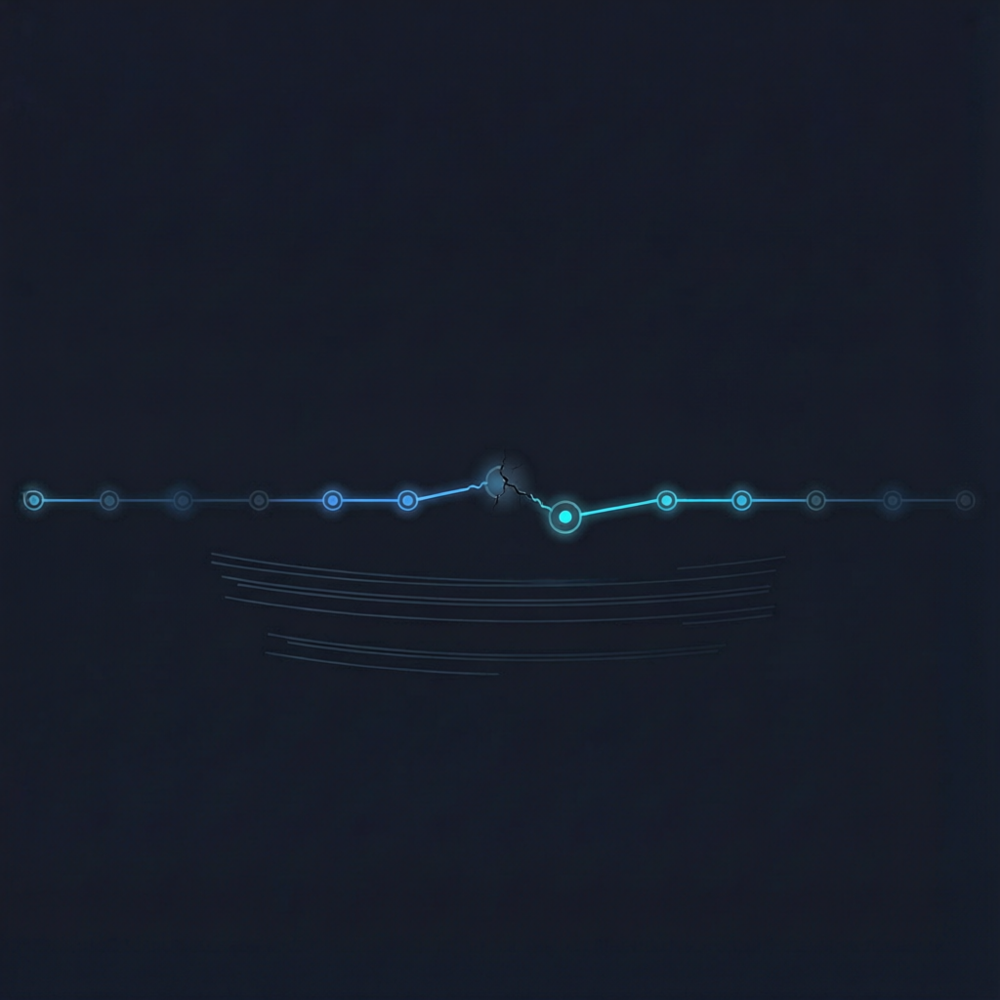

你在 Agent 里敲下一行需求：把这几个接口的鉴权统一一下。
十分钟后它交回一份代码。能跑，但方向偏了；风格像另一个人写的；边界情况一个没处理。
你的第一反应大概率是：这模型不行，等下一代吧。
我不建议你这么急。因为在这套系统里，模型只是其中一层。层诊断错了，结论就一定是错的：要么白等一个不会来的版本，要么一路换模型，却始终没碰到真正该修的地方。
⚠️ 这篇文章只回答一件事：输出不理想时，怎么在一小时内判断它坏在哪一层。不讲提示词技巧，也不吹任何模型。
工程上有一个很好用的等式：
Agent = 模型 + Harness
模型负责「想」：理解、推理、生成。Harness 负责「能」：提示词、工具、上下文、编排、验证、权限、观测。
打个比方：模型是发动机，Harness 是底盘、变速箱和轮胎。车跑不快，你第一件事不该是换发动机，而是先确认油加没加、轮胎有没有爆、变速箱挂在哪一挡。
这也解释了一个很常见的现象：同一个模型，别人用着顺手，你用着处处不对。这中间通常没有玄学，只有上下文、工具和流程的差异。
模型决定天花板，Harness 决定你离天花板有多远。
排查顺序是有讲究的，原则只有一条：外层便宜，内层贵。
补一份规范、改一段工具描述、加一轮自检，成本是几分钟到几小时；而"换模型"等于承认能力不够，成本最高，而且往往由你不可控。所以顺序固定下来：
编排 → 工具 → 上下文 → 模型
只有前三层都被排除，才把锅扣给模型。下面四层，每层给「症状 + 一句话判据」。
图 1｜一个 Agent 的四个可归因层
这是最常见、也最容易被误判成"模型笨"的一层。
症状：单步看起来都对，串起来不对；错了不回头；自己给自己打分说"已完成"；改一处，引入三个新问题。
判据：把同一份结果交给一个只负责挑错的步骤，它能不能自己发现错？
能发现却没改 → 编排问题，缺的是验证回路，不是智商。
代价：加验证要多一轮 token 和等待。但这笔账通常比换模型便宜得多。
症状：选错工具；本该查证的参数靠猜；工具返回一大坨脏数据后开始胡乱推理；报错只有一句 error，没有原因，于是它开始瞎试。
判据：你自己照着工具文档手动做一遍，能不能成？你能成、它不成 → 是工具描述和返回结构的问题。
常见修法：写清"什么时候该用、什么时候不该用"；对返回结果做裁剪和摘要；把错误码分成可重试 / 不可重试 / 需要人确认三类。
症状：它说"没找到相关代码"，其实文件在另一个目录；改了 A 忘了 B，因为它从没见过 B；前文被截断；项目规范压根没加载；历史对话里的旧决策还在污染它。
判据：手动把该看的材料塞全（几个文件、一段规范、一份数据），同一题重跑。明显变好 → 上下文层。
这一层是投入产出比最高的一层。很多"模型好像变聪明了"的体感，本质是"上下文终于喂全了"。
症状：材料给全了、工具顺手了、也有验证回路，仍然稳定地在同一处出错。而且错得很"能力型"——长链精确计算、跨十几个文件的一致性重构、事实密度很高的领域判断。
判据：同一批题，换成明显更强的模型，通过率明显抬升。
🌱 这一层的结论最贵。因为你能做的其实只有三件事：降低任务粒度、拆步骤、加人工确认点。剩下的就是等。
四层判据听着清楚，真排查还是会互相串。用一个最小的对照实验，一次把归属钉死。
第 0 步（最费劲，也最关键）：把"不对味"收敛成 8 到 10 道可判定的题，每题都有客观正确答案或可检查的产出。
💬 "感觉写得不好"没法归因，"这 10 道题里有 4 道过不了"可以。说不清验收标准的任务，本身就是第一个要修的问题。
然后两组对照，每次只动一个变量：
🧪 A 组｜换模型，不换题：同一个 harness、同一批题，换成明显更强的模型再跑一遍。
🔧 B 组｜换 harness，不换模型：同一模型、同一批题，分别试三件事——把材料喂全 / 改工具描述 / 加一轮自检。
图 2｜换模型 vs 换 harness 的对照
结果怎么读，直接查表：
| 观察到的现象 | 归因 | 先动哪只手 |
|---|---|---|
| 换强模型，通过率明显上升 | 模型层 | 拆任务粒度 / 换模型 / 加人工卡点 |
| 换强模型没变化，材料喂全就过 | 上下文层 | 补检索、补规范、控制上下文长度 |
| 手动能做，Agent 反复选错工具 | 工具层 | 重写描述、裁剪返回、错误分类 |
| 单步都对，整体错，加自检就过 | 编排层 | 加验证步骤、加失败重试与回退 |
| 好一次坏一次，看不出规律 | 多半在编排层 | 先把验收标准做实，再谈模型 |
还有一个反直觉的经验，非常好用：
错误越稳定可复现，越可能是模型或工具；错误越忽好忽坏，越像是缺验证、缺约束的编排问题——随机性不是模型独有的，是没兜住的流程把它放大了。
🐛 坑一：方差陷阱。一次跑通不等于稳定。同一题跑 5 次，看通过率，而不是看那次最漂亮的。5 次过 1 次和 5 次过 4 次，是完全不同的两个问题——前者要查上下文和工具，后者要查边界情况。
🐛 坑二：用"换个更强模型"掩盖 harness 缺陷。短期有效，长期负债。成本上去、延迟上去、行为不可复现；而且下一代模型一换，问题原样复现——因为你从来没修过它。
🐛 坑三：定位出来了，但修不了，这很正常。模型能力边界确实存在。这时正确的动作不是继续给提示词加压，而是改任务形状：把一次大任务拆成三次小任务；把"你自己判断"换成"给我三个方案我来选"；在关键节点插人工确认。

图 3｜顺着运行轨迹往上查第一步，把"不对味"写成一句可判定的验收标准。做不到这一步，后面全是猜。
第二步，按运行轨迹问三句话，顺序不能乱：
① 它看见了吗？（上下文）
② 它选对工具了吗？（工具）
③ 它验过自己了吗？（编排）
三句都过关，才轮到问"它会不会"。
第三步，只改一层，用同一批题重跑。一次改两层以上，你永远不知道是哪一下起的作用。
先问它有没有看见，再问它会不会；
先问它有没有被验证，再问它够不够聪明。
Agent 用久的人会有个转变：从问「这个模型行不行」，变成问「这个系统的哪一层还没搭好」。
前者是在赌下一代，只能等；后者每周都能拿到确定的收益。
模型一定会继续变强。但它的强，得通过 harness 才能落到你的业务上。天花板由模型决定，地板由你决定。而绝大多数人抱怨的"输出不理想"，卡在地板上，不在天花板上。
如果这篇对你有用：
👍 点个赞，让更多人少走半年弯路
💬 留言说说：你遇到的那次"输出不理想"，最后查出来是哪一层？
🔄 转发给那个天天喊着"等新模型"的同事
下篇打算写：怎么给 Agent 装一条真正管用的验证回路——不是"让它自己检查一遍"那种糊弄学。想看的话，留个言让我知道。